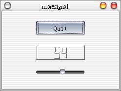

在這個例子中，我們在視窗中配置三個Widget：QPushButton、QLCDNumber與QSlider，除了練習一下多個Widget的配置，還看看如何利用拉動QSlider來改變QPushButton的數字顯示：
#include <qapplication.h> 在這個例子中，大部份的程式之前所介紹的是大同小異的，由於我們使用了QLCDNumber與QSlider，我們必須先include它們的標頭檔： #include <qslider.h>
#include <qlcdnumber.h> 我們一樣繼承QWidget類別，並在建構函式中定義相關的配置與初始化。 接下來這行，宣告一個QLCDNumber物件lcd，指定其位數顯示為2位，父類別為目前的類別： QLCDNumber *lcd = new QLCDNumber(2, this, "lcd");
再來，我們宣告QSlider物件slider，設定為位向為水平配置，父類別為目前的類別； setRange()方法設定QSlider的拉動範圍為0至99，setValue()設定QSlider的預設數值為0： QSlider * slider = new QSlider(Horizontal, this, "slider");
slider->setRange(0, 99); slider->setValue(0); 我們將QSlider物件slider的Signal - valueChanged()連接至QLCDNumber物件lcd的Slot - display()，Signal - valueChanged()會連帶發出QSilder目前的數值，而QLCDNumber就根據這個值改變顯示的數字： connect(slider, SIGNAL(valueChanged(int)), lcd, SLOT(display(int)));
這個程式的執行畫面如下，您可以試試在程式執行後拉看看QSlider觀察畫面變化：  |